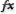

Apply SVG effects
You can use SVG effects to add graphic properties such as drop shadows to your artwork. SVG effects differ from their bitmap counterparts in that they are XML-based and resolution-independent. In fact, an SVG effect is nothing more than a series of XML properties that describe various mathematical operations. The resulting effect is rendered to the target object instead of the source graphic.
Illustrator provides a default set of SVG effects. You can use the effects with their default properties, edit the XML code to produce custom effects, or write new SVG effects.
 To modify Illustrator’s default
SVG filters, use a text editor to edit the Adobe SVG Filters.svg
file in the <userdir>/Application Data/Adobe/Adobe Illustrator
CS3 Settings folder. You can modify existing filter definitions,
delete filter definitions, and add new filter definitions.
To modify Illustrator’s default
SVG filters, use a text editor to edit the Adobe SVG Filters.svg
file in the <userdir>/Application Data/Adobe/Adobe Illustrator
CS3 Settings folder. You can modify existing filter definitions,
delete filter definitions, and add new filter definitions.- Select an object or group (or target a layer in the Layers panel).
- Do one of the following:
-
To apply an effect with its default settings, select the effect from the bottom section of the Effect > SVG Filters submenu.
-
To apply an effect with custom settings, choose Effect > SVG Filters > Apply SVG Filter. In the dialog box, select the effect, and click the Edit SVG Filter button

. Edit the default code and click OK. -
To create and apply a new effect, choose Effect > SVG Filters > Apply SVG Filter. In the dialog box, click the New SVG Filter button
 , enter
the new code, and click OK.
, enter
the new code, and click OK.When you apply an SVG filter effect, Illustrator displays a rasterized version of the effect on the artboard. You can control the resolution of this preview image by modifying the document’s rasterization resolution setting.
Important: An SVG effect must be the last effect when an object uses multiple effects; in other words, it must appear at the bottom of the Appearance panel (just above the Transparency entry). If other effects follow an SVG effect, the SVG output will consist of a raster object.
-